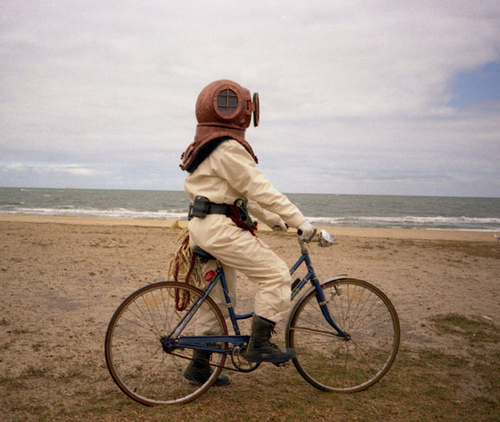

Friday, April the 26th, 2013
back to: title, date or indexes
A letter arrives from Kimika Ying:
Dear Mr. Key : I came across the following picture today which struck me as remarkably familiar, and words from one of your earlier writings came to mind:
“Each Saturday morning, I don the diving helmet and cycle fourteen voots to a bucolic hamlet..”
You may well have seen this photo before, but while it was on my mind I wanted to take a moment to thank you for making the world a more surreal place. Listening to Hooting Yard is always a pleasure.
I had not seen the picture before, and nor did I recall the piece Ms Ying quoted—not surprisingly, as it is nine years old, appearing here in March 2004. Here are both the photograph (from this source) and my elderly tale, What's On In Mustard Parva.

My diving helmet is made of gleaming brass. I polish it once a week, on Friday afternoons. Each Saturday morning, I don the diving helmet and cycle fourteen voots to a bucolic hamlet called Mustard Parva.
(Curiously, there is no neighbouring village named Mustard Magna, although a rustic barnyard person I met while drinking a pot of gaar in the local gaar-pot drinking hut told me that there had once been such a place. In the year of his birth, this toothless derelict said, the sizeable cluster of wooden buildings known as Mustard Magna had been invaded by a sloth of bears, many hundreds of them, driven insane by ergot poisoning, each bear capable of destroying a humble peasant dwelling with a single thwack from its mighty paw. Two hours after the first bear lumbered across Sawdust Bridge, the village was completely obliterated. It is still shown on some maps.)
Jamming my bicycle into a kiosk on Mustard Parva's Yoko Ono Boulevard, I join six or seven other diving helmet enthusiasts for our weekly meeting. Huddled together in the upstairs room of a building fast succumbing to dry rot, we discuss our diving helmets and take lamentably inaccurate minutes which are published regularly through the good offices of the Mustard Parva Thing, whose editor is none other than the blind cousin of Marigold Chew.
Source : The Belle of Amherst & Other Essays Written During An Unprecedented Pea-souper by Dobson (limited edition of three copies, unsigned, bound in tat, and coated with a foul-smelling medicament concocted by Dr Fang)
Hooting Yard on the Air, May the 16th, 2007 : “Kimika Ying Writes In” (starts around 00:13)
Hooting Yard on the Air, May the 2nd, 2013 : “Kimika Ying Writes In” (starts around 00:25)